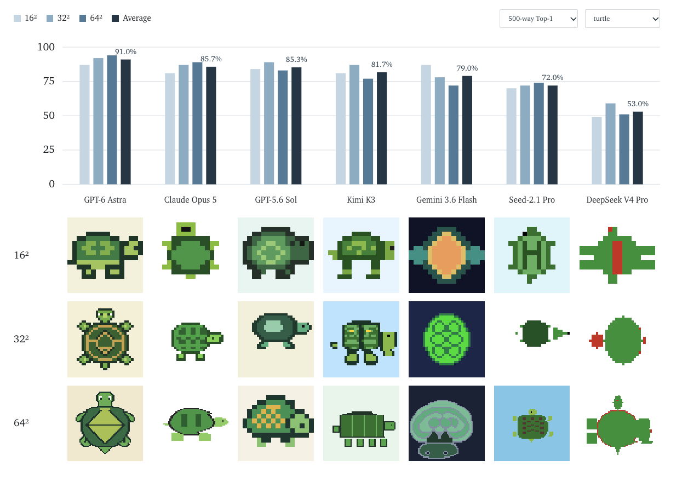
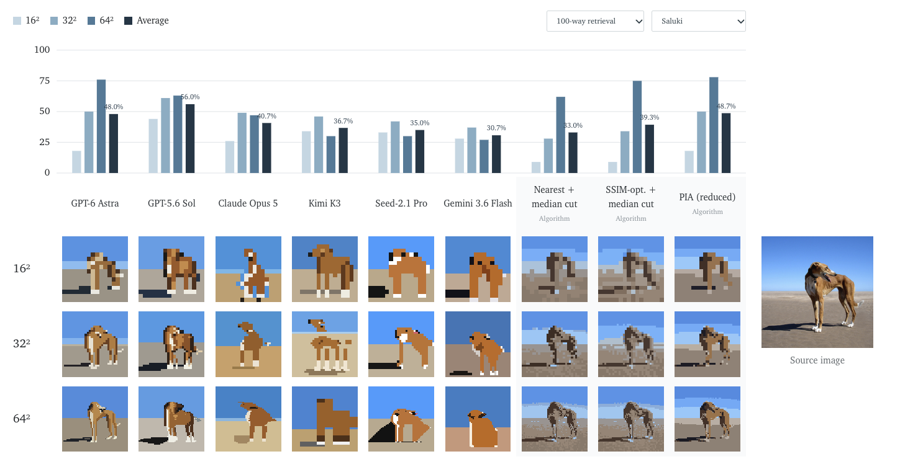
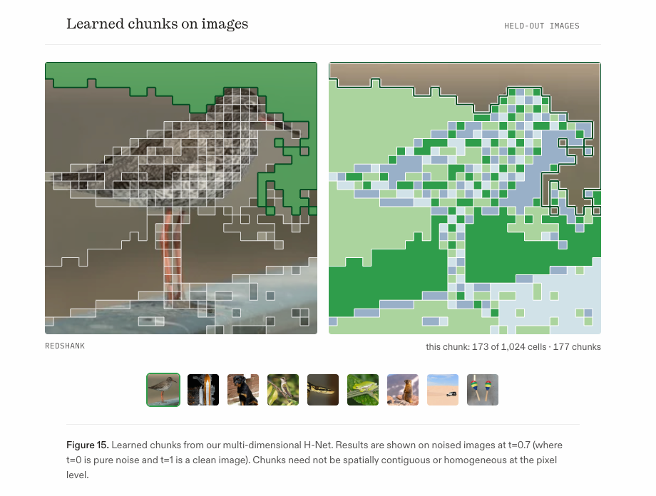
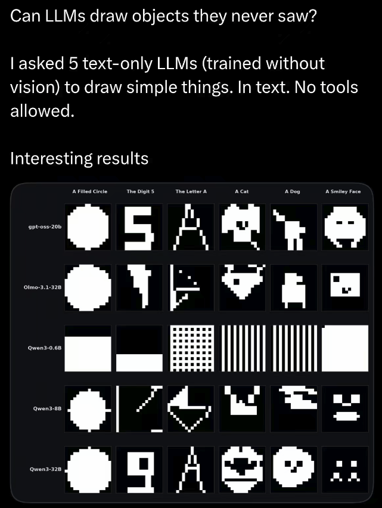
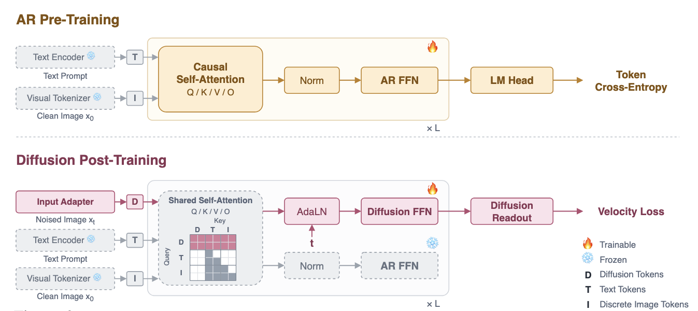

1. LLM As General Visual Generator
1.1 LLM 能出图吗

大概是在 GPT6 Astra 发布前，我和合作者发现，似乎 LLM 不需要通过 agentic tool，可以直接以 Text 的形式进行 probe，完全自回归输出像素图，验证某种视觉表征；效果还不错。后续我们还尝试让 LLM 以类似形式输出了 3D Voxel，以及一些形式的视频，而且 2026 年间不同模型之间代差非常明显。
当时我和合作者想的是，居然这都行，LLM 能力这么吓人的吗？然后我就很兴奋地去找了一些朋友，和他们说，LLM 好像可以直接出图像和视频了，未来 LLM 很可能可以解决视觉生成问题，包括视频生成。
不过当时朋友们的反应多为：怎么出图像，难道是用 Code 么？居然还出视频，这么激进吗？诶，那你这个和之前的 SVG 之类有什么区别嘛？这些也没法得到 realistic 的图像，你怎么可能不用 Diffusion 呢？你这种 AR Visual Gen 的形式，之前不是有工作做过了吗？你这种故事和之前的 DLLM UMM 有什么区别嘛？你这个太 Toy 了，根本不算视频生成吧？视频生成还是 DiT scale 吧，或者再不济也是 AR Vigen，可能轮不到 LLM。
我在和朋友聊完之后，也有点 Emo，心想，对啊，不用 diffusion 怎么得到 realistic 图像呢？不过隐隐约约觉得，这件事情很有趣，似乎可以继续探索一下。然后便是 Astra 和 Opus 5.5 的横空出世——我们用 Astra 在自己的 setting 上测试了一下，发现它可以得到非常惊艳的视觉效果，而且 Grounding 能力简直匪夷所思。同时各种使用 Astra、Opus 5.5 进行 3D 建模、图像绘画、视频制作的案例，也非常令人震撼。
1.2 LLM 能出视频吗

在这之后，我又回去找上述的朋友们聊了一下，发现大家的态度又有了改观。一方面是，当初本来就想从 Generation 跑路的、认为 Understanding 才是正道的，现在更加确信要跑了。他转发给我 Opus 5.5 做视频的案例，和我说，他认为以后真的要 code gen 了，你看现在的 LLM，temporal 上的能力这么吓人，连 video gen 都被部分解决了，生成还有意义吗？
还有的朋友认为，如果单纯是 code，那么最后一公里的 realistic render，还是需要 Diffusion，不过这种情况下，Diffusion 可能就只是一种外挂的组件。与此同时，我也听到一种观点，认为未来可能不需要 AR + DiT，估计到最后只剩下 DiT，与其琢磨各种 AR，不如想办法把 condition 做好，以 Video 为载体的 World Model 某种意义上已经被解决了。
到最后，我和合作者继续讨论了下 LLM As Video Gen Backbone 这件事情的可能性，得到的结论是：之前其实也有一些类似 VideoGPT 和纯 AR Gen 的类 LLM Arch 的工作，不过当时可能受限于某些资源限制、工程难度和数据因素，没有做得很 work；并且其实没必要执着于把 DiT 完全丢掉，可以留一些在末端。同时像 Video UMM 这类以 LLM 为 backbone 的工作，目前也有人在探索，但 UMM 整体而言，潜意识下都是专门为了做生成，没有人会用 UMM 做理解（这也是我觉得很奇怪的地方），而且还有大量争议。因此两条路线都没有很好地受到关注，况且现在 Agentic Vigen 还在如火如荼进行，估计一时半会儿不会有人做这一块，而且也非常耗费资源。
Vigen 本质上相对于 Image Gen，似乎就只是多了个时间轴，LLM 做视频也说明其在 Temporal 和 Visual 上的能力非常吓人，LLM 找个方法做 Vigen 这事情本身就是非常 make sense 的。至于以后会怎么样，IDK，但我个人相信，终有一天，以 LLM 为中心的理解能力，会成为所有领域的超级催化剂。
2. Symbolic Vision
2.1 原生图像还是视觉抽象

在尝试了上述 LLM 用 text 直出像素图的一些 eval 之后，受到 RecA 和 CoVT 的启发，我和合作者讨论了下：如果说我们可以让 VLM/LLM 直出像素图，那么是否可以做一种在后训练乃至预训练阶段完全不需要 DiT 组件、使用提前处理好的 Pixel 图、以 text 的形式作为 GT，但是可以从类图像生成任务中得到某种相较于 VQA 更有细粒度的监督信号，让纯粹的 LLM 得到某种视觉生成能力？看看能对下游任务有什么提升吗？我们给它取名叫 Pixel Reconstruction Tuning（PRT）。
后来我们在一个 Qwen VL 上进行了训练，非常惊讶地发现，PRT 这一套居然非常 work，即使是预训练。并且 PRT 受到原始图像不同抽象程度的影响很大，具体而言是得到 Pixel 图的手段，比如不同的下采样方式。非常有意思的是，即使是同一个 setting，只改变分辨率，也就是 text 的长度，整体而言，性能和分辨率并没有什么显而易见的关系，视觉效果也没有出现任何符合直觉的衰减，整个曲线是先上升后下降的。
并且整体而言，这种形式下的视觉能力，在纯粹测试中，和 LLM 标榜的多模感知能力似乎没有严格对应关系，反而和 LLM 整体的代差有关系，尤其是 coding 方面的代差——如果一个 LLM 的 Agentic Coding 能力强到了一定地步，他的视觉感知能力可能并不是最好的，但整体而言，他在做一些 fancy 的 3D 建模、做视频、画图的视觉产品任务上的能力，是比一些老牌多模厂商要更强的。
2.2 Visual Data >>> Image/Video/3D

所以我和合作者开始好奇，这是否说明，其实如果不是为了传统的视觉生成任务，而是为了增强各种泛多模任务的能力，我们其实不需要完全都是图文之类的数据，甚至不需要经过视觉编码器，而是以某种抽象化的形式，直接训练 LLM 即可呢？本质上，我们只是要找一种更好的初始化方式，为下游任务服务，无论是表征学习，还是大量的图文 alignment，都是如此。
有一些工作说模型里的神经元其实类似一种阀门，就算是 Pixel 这种看上去很 Toy 的形式，用纯文本的方式来训，也能帮助模型首先找到这些语义的位置，只是后面再 transfer 变成生成或者其他下游所需要的一种模式，这也非常符合预训练的性质。
那么此时思路就非常清晰了：目前存量最大、描述最为精确、最结构化的视觉抽象形式，其实就是 Visual Coding。好巧不巧的是，无论是 SVG 还是 Pixel，都是某种 Visual Coding 带来的合成视觉，这件事情就非常有趣了。
而且有一个非常大的优势：相对于原始视觉信息的低信噪比，Visual Coding 这种 Symbolic Primitive 的压缩程度是非常高的，反而更满足某种「压缩即智能」的直觉，也不需要过于庞大的额外容量和处理手段。随着现代数据和训练方法的愈发高效与高质量化，目前 Qwen3.8 的 28B 模型都已经可以吊打几年前几百 B 的模型。如果到某一天，我们可以把视觉信息的密度和压缩到极致、质量提升到极致，比如说「一比特」，那或许真的可以实现某种「0.6B 模型解决千禧年难题」。
那么不妨畅想一下：当我们能用 Visual Coding 摆脱传统视觉数据格式的限制，也能更加 align LLM，让视觉完全成为 Symbolic Visual Primitive，让视觉成为真正的 Language 而不是强行对齐，未来的各种任务是否就不再会被约束呢？训练是否也会更简单呢？传统的视觉生成任务，是否会变成某种 LLM Pretrain + Diffusion Post Train 即可，不需要过于复杂的 tokenizer 设计，也不需要大幅度改动的 MoT 架构和 Alignment？我觉得这件事情很有可能发生，期待未来吧。

参考
- Can LLMs understand and generate images pixel by pixel?
- From Tokens to Bytes I: Scaling Hierarchical Networks
- Know, then Draw: A New Learning Paradigm for Visual Generation
- Can LLMs draw objects they never saw?
1. LLM As General Visual Generator
1.1 Can LLMs generate images?
Shortly before GPT6 Astra came out, a collaborator and I noticed that an LLM does not need an agentic tool to probe a visual representation: it can emit pixel images fully autoregressively as text, and the results were not bad. We then tried the same trick for 3D voxels and for some forms of video, and across 2026 the gap between model generations on this task was very obvious.
Our reaction was: this actually works? Is the LLM really that capable? I went off excitedly to tell friends that LLMs could already output images and video, and that generative vision — video included — would probably be solved by language models.
Their responses were mostly: how do you get an image out of it, writing code? Video too? That's aggressive. And what's the difference from SVG and friends? Those never produce realistic images — how can you avoid Diffusion? Hasn't this autoregressive visual generation been done before? How is this story different from the DLLM UMM line? It's a toy, it doesn't count as video generation. Video generation will be DiT at scale, or at worst AR Vigen, and probably not LLMs at all.
I came away a bit deflated. Fair enough: without diffusion, how do you get realistic images? Still, I had a feeling the direction was worth another look. Then Astra and Opus 5.5 landed. We ran Astra on our own setting and the visual quality was striking, and its grounding was frankly hard to believe. The 3D modelling, drawing and video work people were doing with Astra and Opus 5.5 was just as striking.
1.2 Can LLMs generate video?
Afterwards I went back to the same friends, and the mood had shifted. One of them, who had been planning to leave generation for understanding, was now more certain than ever about leaving: he forwarded me a case of Opus 5.5 making video and said that everything will be code gen — look at the temporal ability of these models, even video generation is partly solved, so what is the point of generation?
Others argued that if it really is just code, the last mile of realistic rendering still needs Diffusion, only now Diffusion is a plug-in component. I also heard the view that we may not need AR plus DiT at all, that only DiT will remain, and that instead of tinkering with autoregressive variants one should get the conditioning right — that the world model carried by video is, in some sense, already solved.
In the end my collaborator and I kept discussing whether the LLM could be the backbone for video generation. Our conclusion: there have been LLM-like architectures for this before — VideoGPT and pure-autoregressive generation — but they were probably limited by compute, engineering difficulty and data, and never quite worked. There is also no need to throw DiT away entirely; some of it can stay at the end. Meanwhile LLM-backbone video work of the Video UMM kind is being explored, but UMMs are implicitly built for generation only — nobody uses them to understand, which I find odd — and the area is full of disagreement. So neither line has received much attention; agentic video generation is in full swing, and probably nobody will touch this for a while, especially since it is expensive.
Video generation is, relative to image generation, mostly an extra time axis, and the fact that LLMs can do it says something about their temporal and visual ability. An LLM-based route to video generation makes a lot of sense. Where this goes, IDK. But I believe that one day, understanding centred on LLMs will be a super-catalyst for every field.
2. Symbolic Vision
2.1 Native image or visual abstraction?
After running some of those evaluations of LLMs emitting pixels as text, and inspired by RecA and CoVT, my collaborator and I asked: if a VLM/LLM can draw pixels directly, could we do something at post-training, or even pretraining, that needs no DiT component at all — using preprocessed pixel images as text-form ground truth, and getting a finer-grained supervision signal than VQA out of an image-generation-like task, so that a plain LLM acquires some visual generation ability? And what would that do for downstream tasks? We called it Pixel Reconstruction Tuning (PRT).
We then trained it on a Qwen VL, and were surprised by how well it worked, pretraining included. PRT turned out to be very sensitive to how abstract the source image is — concretely, to how the pixel image is obtained, for example which downsampling is used. Oddly, within the same setting, changing only the resolution — that is, the length of the text — showed no obvious relationship with performance, and no intuitive degradation in visual quality either; the curve rises and then falls.
More generally, visual ability in this form did not line up with the multimodal perception an LLM advertises. It lined up with the model generation — especially with coding. A model with very strong agentic coding may not have the best visual perception, yet on fancy 3D modelling, video and drawing tasks it can beat vendors with a long multimodal track record.
2.2 Visual data >>> image/video/3D
So we started to wonder: does this mean that, for strengthening general multimodal ability rather than for classical visual generation, we do not need image-text data at all, or even a visual encoder — that training the LLM directly on some abstracted form is enough? What we are really looking for is a better initialization for downstream tasks, whether that is representation learning or a large amount of image-text alignment.
Some work suggests that neurons in these models act like valves: even something as toy-looking as pixels, trained as pure text, helps the model first locate the semantics, which can later be transferred into generation or whatever else a downstream task needs. That fits the nature of pretraining well.
Which makes the picture clearer. The largest, most precisely described and most structured form of visual abstraction we have is visual coding — and both SVG and pixels are synthetic vision produced by visual coding, which is interesting.
It also has a big advantage: against the low signal-to-noise ratio of raw visual data, a symbolic primitive like visual coding is compressed very heavily, which fits the intuition that compression is intelligence, and it does not demand enormous extra capacity or processing. As data and training methods get more efficient and higher quality — a 28B model like Qwen3.8 already beats models with hundreds of billions of parameters from a few years ago — extreme compression of visual information may become feasible. If one day we can push the density and quality of visual information to the limit, say to a single bit, then a 0.6B model solving a Millennium Prize problem might really be possible.
So let us imagine: once visual coding frees us from the constraints of conventional visual data formats, once it aligns better with the LLM so that vision becomes a genuine symbolic visual primitive — real language rather than something forcibly aligned — will downstream tasks stop being constrained? Will training become simpler? Will classical visual generation become just LLM pretraining plus Diffusion post-training, without elaborate tokenizer design and without heavily modified MoT architectures and alignment? I think there is a good chance. Let's see.
References
- Can LLMs understand and generate images pixel by pixel?
- From Tokens to Bytes I: Scaling Hierarchical Networks
- Know, then Draw: A New Learning Paradigm for Visual Generation
- Can LLMs draw objects they never saw?